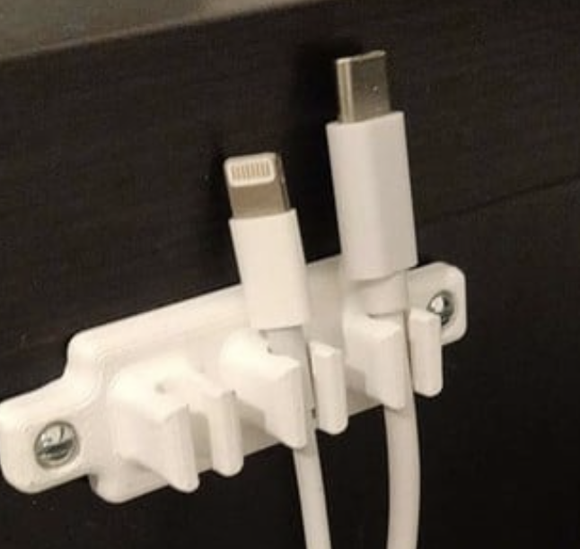

Class 5: 3d Printing and Design
This week we took a dive into the world of 3d printing design. This started with learning how to scan objects in the real world and make them part of the digital world. Then we learned how to 3d print models and the basics of some unique 3d printing design technologies.
3D printing Project: Locking Cable Holder
I have a problem every day of my cables falling off the edge of my bedside table and pooling up on the floor like this.

I thought that this assignment would be a perfect excuse to fix this issue. The first thing I did was look up some cable design holders that other people have designed.
but looking at these designs all of them had a few things that bugged me.
- The cable looked like it could easily pop out of the holder
- if you get the cable to fit snugly then there will be pressure on the cable.
Based on these problems I made some design goals
Design Goals
- Hold the cable in place when needed
- Don't put much pressure on the cable when in the holder
- Make it easy to produce
Based on these goals this is what I came up with
Original Design

This design uses a rotating locking mechanism to make sure the cable stays in the holder while not putting much pressure on it. It also uses a special 3d printing design technique called Print in place. This means that you can print the object and it will be assembled already. In our case the rotating lock will be pre assembled inside of the 2nd piece.
Version 1:
To realize this concept I used a program called fusion 360 to cad model the holder.
I then exported this model to an STL file and imported it to prusa slicer.
Prusa slicer is a software that makes it easy to get your model ready to print. It will generate a g-code (what the 3d printer reads) for your model super quickly and will make sure that it is 3d printable. It can add supports to do this or a extra adhesion base.
Here is the printed model.

This first prototype had a few problems. It was supper finicky and the rotating piece would rotate out of the housing like this.
Version 2:
This version made the opening in the front smaller to try and solve the popping out issue. The first time I printed this model I did not slice it well. The little knob on the rotating piece was on the same side as the handle so there was a lot of execs support material. I moved the knob to the bottom to fix this.
Here it is in prusa slicer with less support material.

here is the 2nd Version done! It still has the same popping out problem but it was much more efficient to print.
Version 3:
Another problem that I've encountered in the past is how I originally designed the cable holder in cad. It is very difficult to make modifications to the design. To fix this I decided to redesign the entire thing but this time with parametric design philosophy in mind. This has you make variables to define dimensions in the model.
In this design I also added some interlocking edges to the design to try and make it harder for them to split.

To make these edges work I also decided to increase my wall size, which was now super easy because of my parametric design!

This version was much easier to make changes with and printed efficiently but the same original issue still happened. The interlocking walls didn't work.
Version 4:
To finally fix the popping out issue I made the cable opening really small. Again, this was super easy to do because of my parametric design.

It worked! The locking part didn't pop out! My only issues with this design is its hard to turn using the little knob and it is kinda bulky.
Version 5:
This version I made the wall size a bit smaller and I extended the bottom so you can hold on to it and rotate the locking bit.


I'm super happy with how this design came out. I just want more of them!
Version 6 (kinda):
I stacked a bunch of the cable holders next to each other using fusion360's rectangular pattern tool.

This design works super well and now I don't have a pool of cables! I used a little piece of double sided tape to attach the holder to the table.